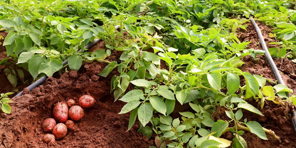

Selección de Terrenos y Semillas
Nuestro proceso comienza con la elección rigurosa de terrenos con composición mineral equilibrada, humedad controlada y exposición solar óptima. Cada parcela es sometida a análisis periódicos para garantizar las condiciones ideales de cultivo. Utilizamos exclusivamente semillas certificadas, provenientes de productores especializados que garantizan trazabilidad, sanidad y pureza genética. Esto asegura que cada papa nazca con el potencial necesario para alcanzar estándares premium de tamaño, sabor y textura.